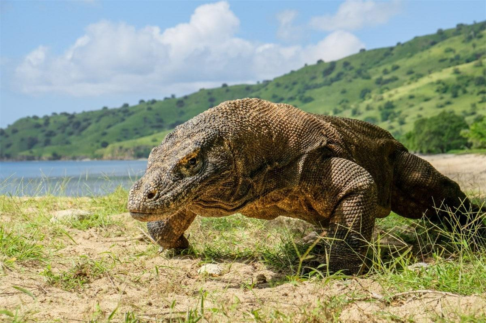

PHOLYCHONG.SV33
Home |
Kazackstan |
Armenia |
Cambodia |
Malaysia |
Indonesia |
Thailand |
Mongolia |
Pakistan |
Nepal |
Bangladesh |
Laos |
Philippin |
Myanmar |
Vietnam |
India |
៥. ឥណ្ឌូណេស៊ី (Indonesia)

នៅប្រទេសឥណ្ឌូណេស៊ី គោលដៅទេសចរណ៍ពិសេសៗ រួមមានដូចជាឧទ្យានជាតិកូម៉ូដូ (Komodo National Park) គឺជាគោលដៅទេសចរណ៍ដ៏ពេញនិយមមួយ។ កន្លែងគួរទស្សនាមួយទៀត គឺបឹងតូបា (Lake Toba) ហើយនៅកណ្តាលបឹងនោះមានកោះឈ្មោះថា សាម៉ូសឺ (Samosir)។ ទេសចរជាច្រើនក៏ចូលចិត្តធ្វើដំណើរទៅកោះបាលីផងដែរ ដែលជាកោះទេសចរណ៍ដ៏ល្បីប្រចាំឥណ្ឌូណេស៉ីសម្រាប់កន្លែងជិះទឹករលក កន្លែងកម្សាន្តពេលរាត្រី ទឹកធ្លាក់ ហើយនិងព្រៃទាក់ទាញទឹកភ្លៀង។ ការកំណត់កញ្ចប់ថវិកាសម្រាប់ការដើរទេសចរណ៍ហាក់ពិបាកបន្តិច ដោយសារថ្លៃចាយវាយមានកម្រិតខុសគ្នាខ្លាំងពីកន្លែងមួយទៅកន្លែងមួយនៅក្នុងប្រទេសដែលសម្បូរទៅដោយដែនកោះមួយនេះ។ សម្រាប់ជម្រើសម្ហួបដែលទាបបំផុត គឺអាហារ Street food ថ្លៃចន្លោះ៣-៥ដុល្លារ។ ចំណែកជម្រើសកន្លែងស្នាក់នៅ រួមមានបន្ទប់ស្នាក់នៅរួម ដែលមានតម្លៃចាប់ផ្តើមពី៥ដុល្លារឡើងទៅ ហើយនិងបន្ទប់លក្ខណៈឯកជនដែលមានតម្លៃចាប់ពី១៥ដុល្លារឡើង។ សរុបមក កញ្ចប់ថវិកាប្រចាំថ្ងៃគឺជាមធ្យមចន្លោះ២៥-៣០ដុល្លារ សម្រាប់ថ្លៃហូបចុក យានជំនិះ និងស្នាក់នៅ ប៉ុន្តែបើចង់បានកន្លែងស្នាក់នៅមានផាសុកភាពបន្តិចគឺអាចដល់៥០ដុល្លារក្នុង១ថ្ងៃ។
Next